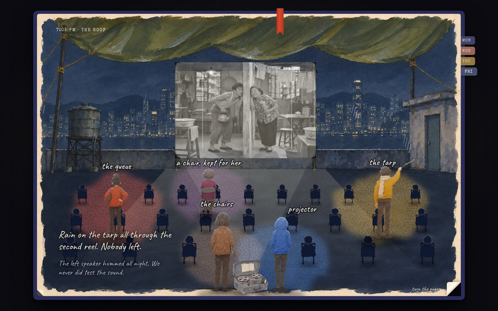

How do you let someone practise leading?
Team Quest
it scored you

Six Flights
it took the score away
Asterwind
it puts you in the room
A GAME-DESIGN INTERVIEW · CCGL9079
Six Flights
four of us, three builds, one question
 Team Questit scored you
Team Questit scored you Asterwindit puts you in the roomTeam Questit scored youAsterwindit puts you in the room
Asterwindit puts you in the roomTeam Questit scored youAsterwindit puts you in the room